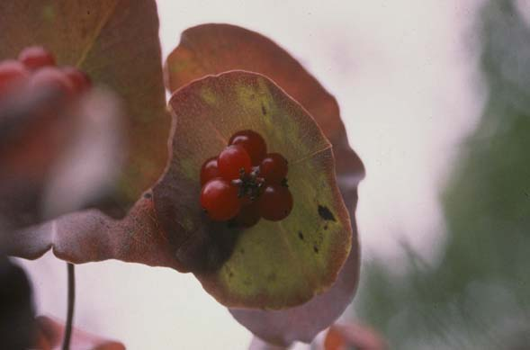
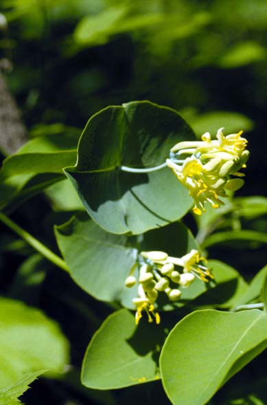
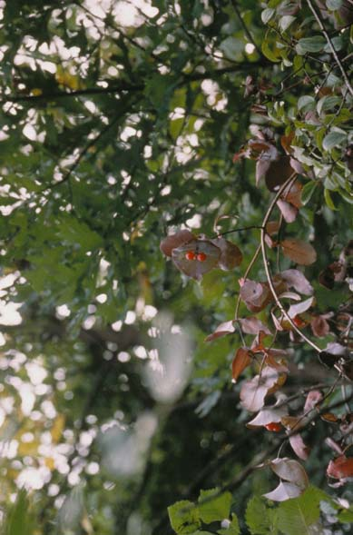

Lonicera Prolifera
Family: Caprifoliaceae
Yellow Honeysuckle
Swink/Wilhelm # 7


Click to view larger photo
FLOWERING: June
SEED TIMING: Early to mid-September
HABITAT: Woodlands
DIAGNOSTIC FEATURES: Sprawling woody vine or vine-like shrub. Uppermost pair of joined leaves has a whitish bloom above. Stem appears to pass through center of pair. Leaves rounded; as wide or wider than long. Tubular, pale-yellow flower clusters.
TO PICK: Berries are red. Pick entire cluster.